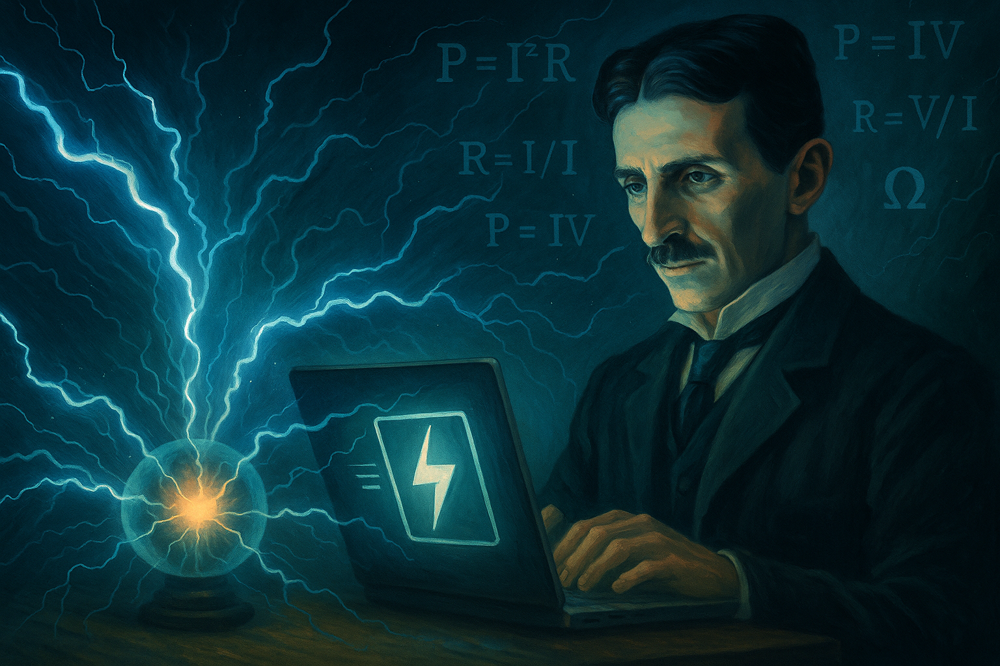

Electro Calculadora

Electro Calculadora es un proyecto web desarrollado con Angular, enfocado en resolver cálculos eléctricos fundamentales como potencia, corriente, voltaje y resistencia, en configuraciones tanto monofásicas como trifásicas. El objetivo principal fue crear una herramienta precisa, intuitiva y de uso inmediato para estudiantes, técnicos e ingenieros que requieren validar datos eléctricos sin recurrir a software complejo.
La aplicación permite al usuario seleccionar el tipo de sistema, ingresar variables como tensión, corriente o resistencia, y obtener resultados instantáneamente. La lógica de cálculo fue implementada en TypeScript mediante funciones reutilizables, y estructurada bajo componentes Angular modulares, facilitando su escalabilidad.
Durante su desarrollo, se integraron buenas prácticas de programación reactiva con formularios controlados, validación de entrada, y separación de lógica en servicios reutilizables. Además, se priorizó la experiencia del usuario con una interfaz responsiva, clara y centrada en la accesibilidad.
Este proyecto refleja no solo el dominio técnico de Angular y conceptos eléctricos, sino también la capacidad de combinar diseño funcional con precisión matemática, permitiéndome avanzar hacia un perfil profesional que conecta software y electrónica aplicada.
Tecnologías usadas:
 HTML
HTML CSS
CSS JavaScript
JavaScript Angular
AngularRetos afrontados y aprendizajes:
- Implementación de cálculos eléctricos dinámicos con TypeScript.
- Gestión del estado y reactividad con formularios Angular.
- Creación de interfaz intuitiva para usuarios no técnicos.
- Modularización del código para mantener escalabilidad.